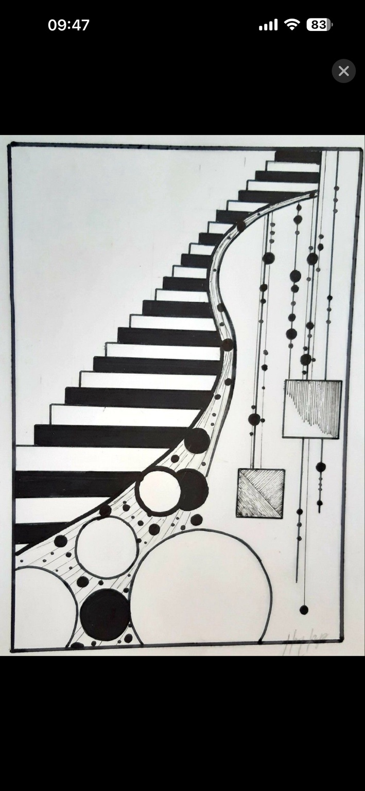
01 / TEMEL TASARIM
Nokta Çalışması
Noktaları farklı büyüklüklerde, aralıklarla ve yoğunluklarda yerleştirerek denge, hareket, ritim ve bütünlük oluşturma.
KompozisyonTasarım sürecimi, mekânsal araştırmalarımı ve çalışmalarımı keşfedin.
Biçim, renk, doku, ışık ve mekânsal algı üzerine akademik çalışmalar. Her çalışma, tasarım kararlarının temel ilkelerini araştırır.

Noktaları farklı büyüklüklerde, aralıklarla ve yoğunluklarda yerleştirerek denge, hareket, ritim ve bütünlük oluşturma.
Kompozisyon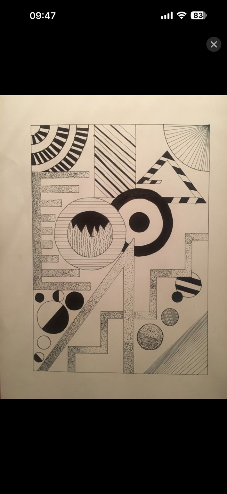
Simetrik ve asimetrik düzenlemeler ile tekrar, yön ve aralıklar üzerinden görsel uyum kurma.
Kompozisyon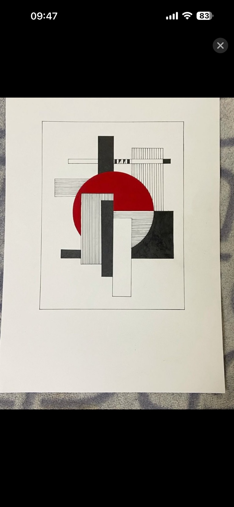
Şekillerin konumları, büyüklükleri ve çevresindeki boşluklarla özgün bir kompozisyon oluşturma.
Kompozisyon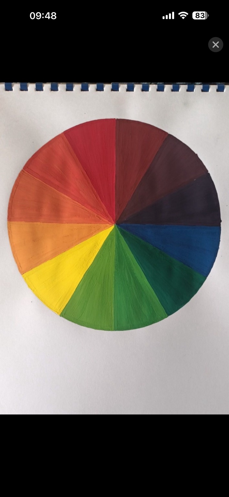
Büyük-küçük, açık-koyu, düz-eğri ve dolu-boş karşıtlıklarını tek bir kompozisyonda buluşturma.
Kompozisyon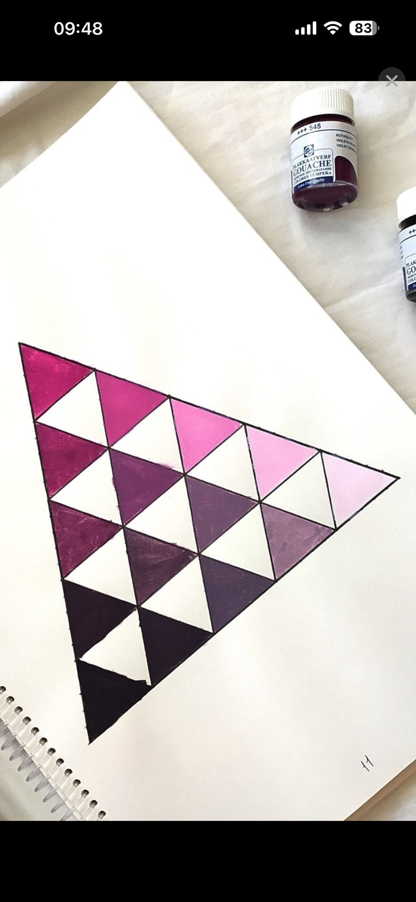
Ana, ara ve üçüncül renklerin ilişkilerini dairesel bir düzen içinde inceleme.
Renk teorisi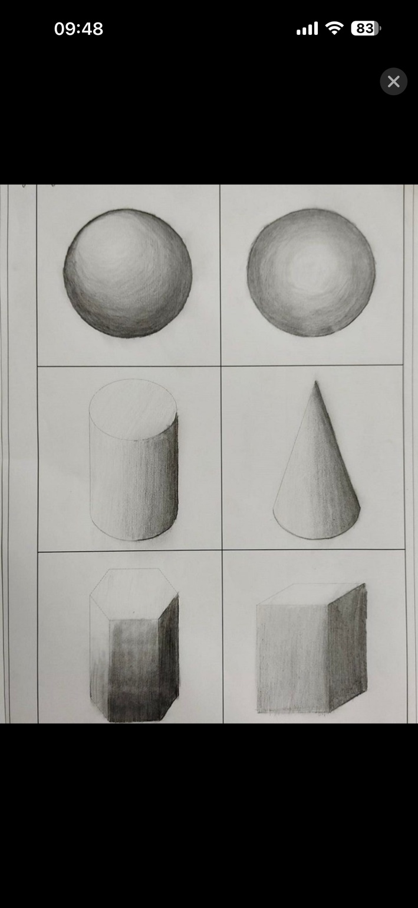
Bir rengin açık ve koyu değerlerini inceleyerek ton geçişleri, derinlik ve hacim araştırması.
Renk teorisi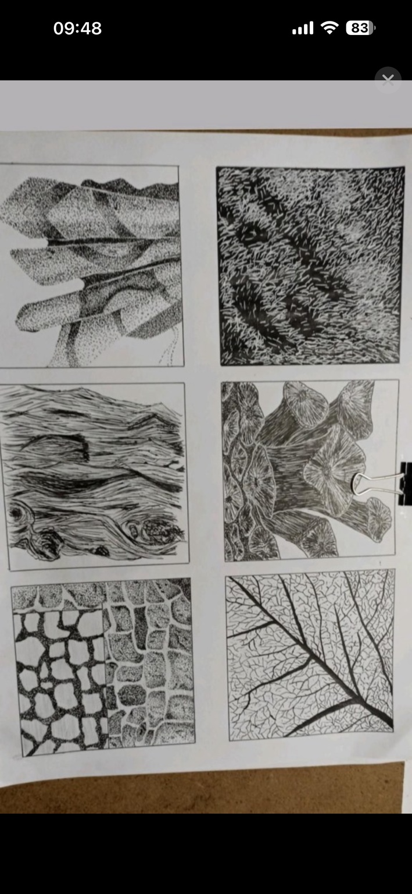
Işık yönü, aydınlık-koyu değerler ve düşen gölgelerle nesnelerin hacmini ifade etme.
Işık ve gölge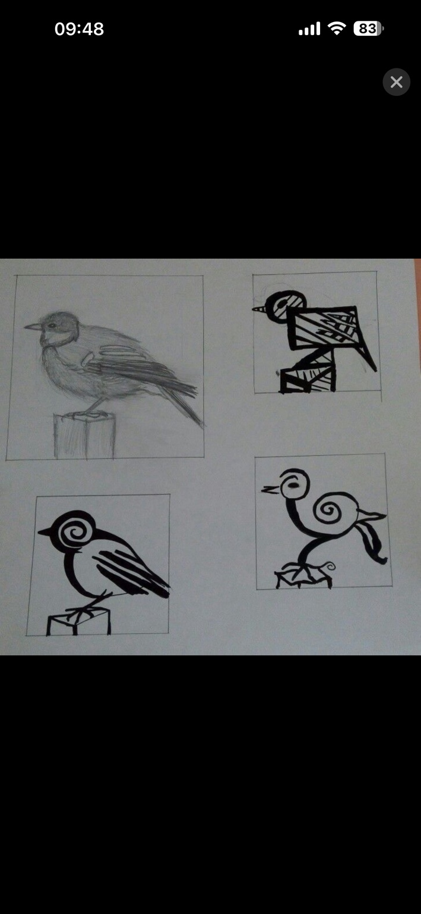
Doğal ve yapay yüzeylerin pürüz, sertlik, yumuşaklık, parlaklık ve matlık özelliklerini inceleme.
Malzeme ve doku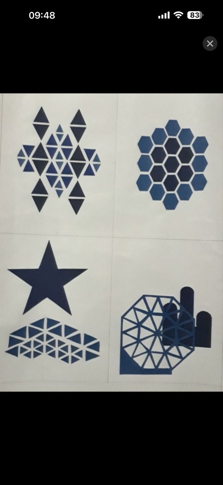
Doğal veya yapay bir nesnenin karakteristik özelliklerini koruyarak biçimi sadeleştirme.
Form araştırması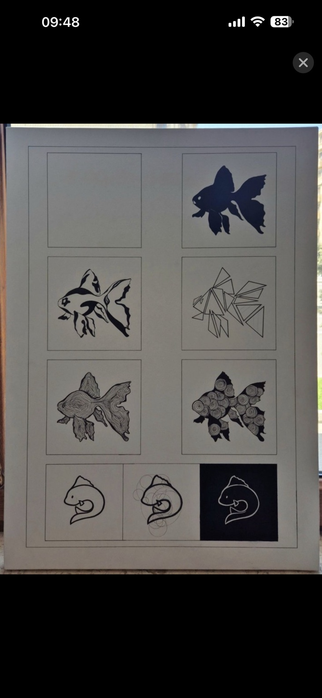
Görsel elemanların gruplanması, benzerlik ilişkileri ve gözün izlediği görsel akış üzerine çalışma.
Algı ilkeleri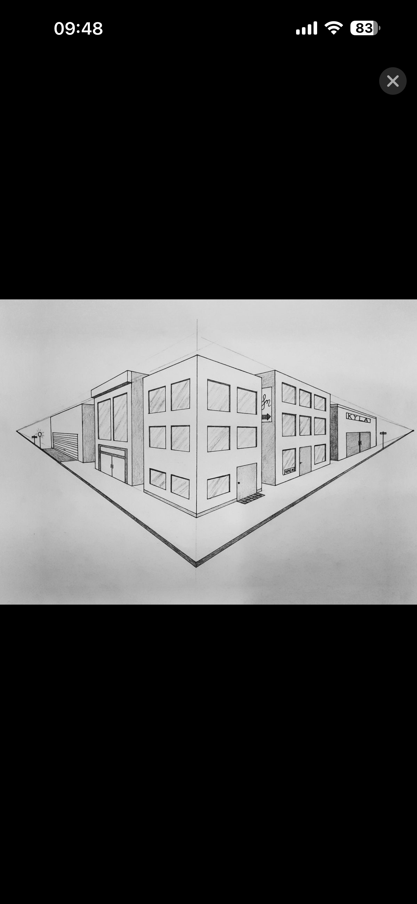
Doğal formların çizgi, eğri, yüzey ve geometrik ilişkilerini analiz ederek tasarıma uyarlama.
Form araştırması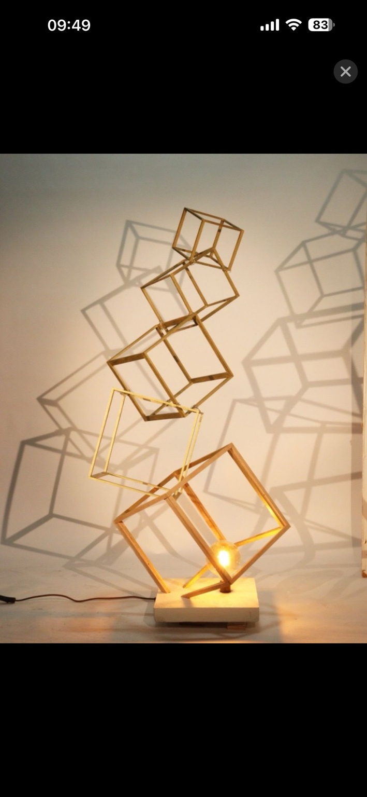
Ufuk çizgisi ve iki kaçış noktası yardımıyla genişlik, derinlik ve hacmi iki boyutlu yüzeyde kurma.
Perspektif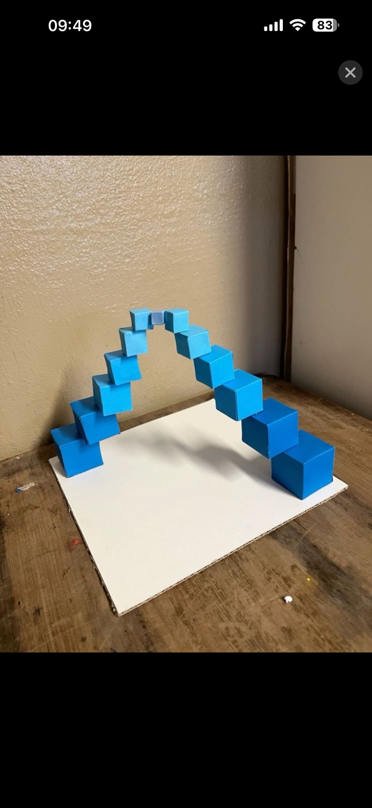
Işığın yönü ve şiddetini inceleyerek form, hacim ve mekânsal konum algısı oluşturma.
Işık ve hacim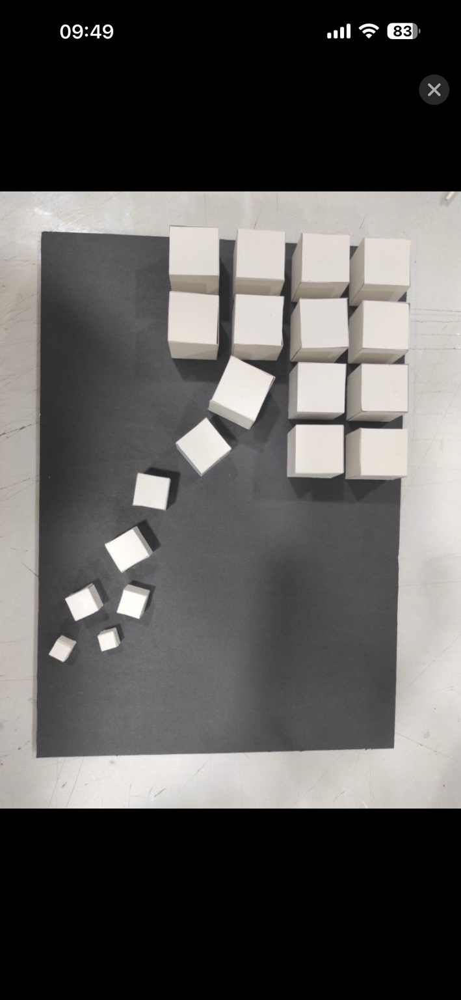
Çizgi, çubuk ve düzlemleri birleştirerek taşıyıcı ilişkileri ve üç boyutlu düzeni araştırma.
StrüktürBoyut, renk, biçim, konum, doku ve yoğunluk yoluyla görsel öncelik ve yönlendirme oluşturma.
Görsel düzenNot: İlk sürümde görseller, gönderdiğin ekran görüntülerinin sırasına göre yerleştirildi. Hiyerarşi çalışmasının görseli henüz ayrı olarak eşleştirilmedi.
İç mimarlık ve çevre tasarımı odağında; form, malzeme, ışık ve mekân ilişkilerini araştıran bir tasarım yaklaşımı. Bu portfolyo, akademik üretimlerden mekânsal araştırmalara uzanan tasarım sürecini bir araya getirir.
İş birlikleri, proje paylaşımları ve iletişim için benimle bağlantı kurabilirsiniz.
E-posta adresini ekle →E-posta ve sosyal medya bağlantıları yayın öncesinde eklenecek.